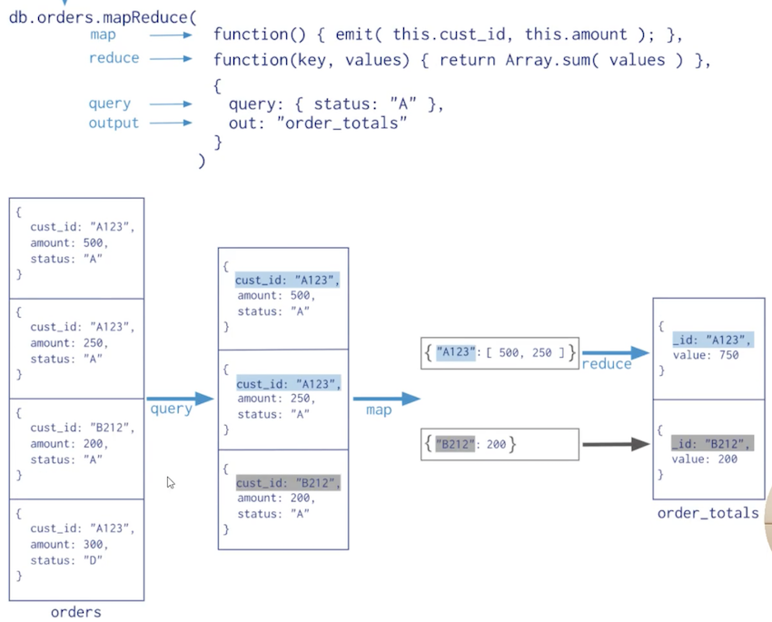

7 聚合操作高级操作
./mongo localhost:27017 -u fox -p fox --authenticationDatabase=admin
聚合操作示例1
统计每个分类的book文档数量
db.books.aggregate([
{$group: {_id: "$type", total:{$sum:1}}},
{$sort: {total: -1 }}
])
> db.books.aggregate([
... {$group: {_id: "$type", total:{$sum:1}}},
... {$sort: {total: -1 }}
... ])
{ "_id" : "technology", "total" : 16 }
{ "_id" : "sociality", "total" : 11 }
{ "_id" : "novel", "total" : 11 }
{ "_id" : "literature", "total" : 8 }
{ "_id" : "travel", "total" : 7 }
标签的热度排行，标签的热度则按其关联book文档的收藏数（favCount)来计算
db.books.aggregate([
{$match: {favCount:{ $gt:0 }}},
{$unwind:"$tag"},
{$group:{_id:"$tag", total:{$sum:"$favCount"}}},
{$sort: {total:-1}}
])
> db.books.aggregate([
... {$match: {favCount:{ $gt:0 }}},
... {$unwind:"$tag"},
... {$group:{_id:"$tag", total:{$sum:"$favCount"}}},
... {$sort: {total:-1}}
... ])
{ "_id" : "document", "total" : 712 }
{ "_id" : "popular", "total" : 665 }
{ "_id" : "developer", "total" : 448 }
{ "_id" : "nosql", "total" : 346 }
{ "_id" : "mongodb", "total" : 284 }
$match阶段：用于过滤favCount=O的文档。$unwind阶段：用于将标签数组进行展开，这样一个包含3个标签的文档会被拆解为3个条目。$group阶段：对拆解后的文档进行分组计算，$sum: "$favCount"表示按favCount字段进行累加。$sort阶段：接收分组计算的输出，按total得分进行排序。
统计book文档收藏数 [0,10),[10,60),[60,80),[80,100),[100.+~)
https://www.mongodb.com/docs/manual/reference/operator/aggregation/bucket/
db.books.aggregate([{
$bucket:{
groupBy: "$favCount",
boundaries: [0,10,60,80,100],
default:"other",
output: {"count":{$sum:1}}
}
}])
> db.books.aggregate([{
... $bucket:{
... groupBy: "$favCount",
... boundaries: [0,10,60,80,100],
... default:"other",
... output: {"count":{$sum:1}}
... }
... }])
{ "_id" : 0, "count" : 7 }
{ "_id" : 10, "count" : 25 }
{ "_id" : 60, "count" : 12 }
{ "_id" : 80, "count" : 9 }
聚合操作示例2
- 导入邮政编码数据集: https://media.mongodb.org/zips.json
- 使用
mongoimport工具导入数据 https://www.mongodb.com/try/download/database-tools
$ wget https://fastdl.mongodb.org/tools/db/mongodb-database-tools-rhel70-x86_64-100.5.2.tg
$ tar -zxvf mongodb-database-tools-rhel70-x86_64-100.5.2.tgz
$ wget https://media.mongodb.org/zips.json
cd mongodb-database-tools-rhel70-x86_64-100.5.2/bin
./mongoimport -h localhost:27017 -u fox -p fox --authenticationDatabase=admin -c zips --file /home/vagrant/tmp/zips.json
[root@jabox bin]# ./mongoimport -h localhost:27017 -u fox -p fox --authenticationDatabase=admin -c zips --file /home/vagrant/tmp/zips.json
2022-04-10T12:58:31.056+0000 connected to: mongodb://localhost:27017/
2022-04-10T12:58:31.514+0000 29353 document(s) imported successfully. 0 document(s) failed to import.
h -host：代表远程连接的数据库地址，从认连接本地Mongo数据库；--port:代表远程连接的数据库的端口，默认连接的远程端口27017;-u，-username: 代表连接远程数据库的账号，如果设置数据库的认证，需要指定用户账号；-p，一password: 代表连接数据库的账号对应的密码；-d, --db: 代表连接的数据库；-c, --collecton: 代表连接数据库中的集合：-f, --fields: 代表导入集合中的字段；--type：代表导入的文件类型，包括csv和json.tsv文件，默认json格式；--file: 导入的文件名称--headerline: 导入csv文件时，指明第一行是列名，不需要导入；
./mongo localhost:27017 -u fox -p fox --authenticationDatabase=admin
> db.zips.find().count()
29353
返回人口超过1000万的州
db.zips.aggregate([
{ $group: { _id: "$state", totalPop: {$sum: "$pop"} } },
{ $match: { totalPop: { $gt: 10*1000*1000 } } }
])
> db.zips.aggregate([
... { $group: { _id: "$state", totalPop: {$sum: "$pop"} } },
... { $match: { totalPop: { $gt: 10*1000*1000 } } }
... ])
{ "_id" : "FL", "totalPop" : 12686644 }
{ "_id" : "IL", "totalPop" : 11427576 }
{ "_id" : "OH", "totalPop" : 10846517 }
{ "_id" : "NY", "totalPop" : 17990402 }
{ "_id" : "TX", "totalPop" : 16984601 }
{ "_id" : "CA", "totalPop" : 29754890 }
{ "_id" : "PA", "totalPop" : 11881643 }
这个聚合操作的等价SQL是：
SELECT state,SUM(POP)AS totalPop
FROM zips
GROUP BYstate
HAVING totalPop>=(10*1000*1000)
返回各州平均城市人口
db.zips.aggregate([
{ $group: {_id: {state: "$state", city: "$city"}, pop: {$sum: "$pop"}} },
{ $group: {_id: "$_id.state", avgCityPop: {$avg: "$pop" }}}
])
> db.zips.aggregate([
... { $group: {_id: {state: "$state", city: "$city"}, pop: {$sum: "$pop"}} },
... { $group: {_id: "$_id.state", avgCityPop: {$avg: "$pop" }}}
... ])
{ "_id" : "ID", "avgCityPop" : 4320.811158798283 }
{ "_id" : "AR", "avgCityPop" : 4175.355239786856 }
{ "_id" : "AZ", "avgCityPop" : 20591.16853932584 }
{ "_id" : "NC", "avgCityPop" : 10622.815705128205 }
{ "_id" : "PA", "avgCityPop" : 8679.067202337472 }
{ "_id" : "NV", "avgCityPop" : 18209.590909090908 }
{ "_id" : "WY", "avgCityPop" : 3384.5373134328356 }
{ "_id" : "VA", "avgCityPop" : 8526.177931034483 }
{ "_id" : "MN", "avgCityPop" : 5372.21375921376 }
{ "_id" : "OR", "avgCityPop" : 8262.561046511628 }
{ "_id" : "OK", "avgCityPop" : 6155.743639921722 }
{ "_id" : "NH", "avgCityPop" : 5232.320754716981 }
{ "_id" : "IN", "avgCityPop" : 9271.130434782608 }
{ "_id" : "LA", "avgCityPop" : 10465.496277915632 }
{ "_id" : "ME", "avgCityPop" : 3006.4901960784314 }
{ "_id" : "NM", "avgCityPop" : 5872.360465116279 }
{ "_id" : "SD", "avgCityPop" : 1839.6746031746031 }
{ "_id" : "MT", "avgCityPop" : 2593.987012987013 }
{ "_id" : "ND", "avgCityPop" : 1645.0309278350514 }
{ "_id" : "IA", "avgCityPop" : 3123.0821147356583 }
....
按州返回最大和最小的城市
db.zips.aggregate([
{$group:
{ _id: { state:"$state", city:"$city"},
pop: {$sum:"$pop"}
}
},
{ $sort: { pop:1 } },
{$group:
{
_id: "$_id.state",
biggestCity: {$last: "$_id.city" },
biggestPop: {$last:"$pop" },
smallestCity: {$first:" $_id.city"},
smallestPop: {$first: "$pop" }
}
},
{ $project:
{_id:0,
state:"$_id",
biggestcity: {name:"$biggestCity", pop:"$biggestPop"},
smallestCity:{name:"$smallestCity", pop:"$smallest Pop"}
}}
])
> db.zips.aggregate([
... {$group:
... { _id: { state:"$state", city:"$city"},
... pop: {$sum:"$pop"}
... }
... },
... { $sort: { pop:1 } },
... {$group:
... {
... _id: "$_id.state",
... biggestCity: {$last: "$_id.city" },
... biggestPop: {$last:"$pop" },
... smallestCity: {$first:" $_id.city"},
... smallestPop: {$first: "$pop" }
... }
... },
... { $project:
... {_id:0,
... state:"$_id",
... biggestcity: {name:"$biggestCity", pop:"$biggestPop"},
... smallestCity:{name:"$smallestCity", pop:"$smallest Pop"}
... }}
... ])
{ "smallestCity" : { "name" : " $_id.city" }, "state" : "HI", "biggestcity" : { "name" : "HONOLULU", "pop" : 396643 } }
{ "smallestCity" : { "name" : " $_id.city" }, "state" : "AL", "biggestcity" : { "name" : "BIRMINGHAM", "pop" : 242606 } }
{ "smallestCity" : { "name" : " $_id.city" }, "state" : "VT", "biggestcity" : { "name" : "BURLINGTON", "pop" : 39127 } }
{ "smallestCity" : { "name" : " $_id.city" }, "state" : "GA", "biggestcity" : { "name" : "ATLANTA", "pop" : 609591 } }
{ "smallestCity" : { "name" : " $_id.city" }, "state" : "FL", "biggestcity" : { "name" : "MIAMI", "pop" : 825232 } }
{ "smallestCity" : { "name" : " $_id.city" }, "state" : "WA", "biggestcity" : { "name" : "SEATTLE", "pop" : 520096 } }
{ "smallestCity" : { "name" : " $_id.city" }, "state" : "AK", "biggestcity" : { "name" : "ANCHORAGE", "pop" : 183987 } }
5.3 MapReduce
Map Reduce操作将大量的数据处理工作拆分成多个线程并行处理，然后将结果合并在一起。MongoDB提供的Map-Reduce非常灵活，对于大规模数据分析也相当实用。
MapReduce具有两个阶段：
- 将具有相同Key的文档数据整合在一起的map阶段
- 组合map操作的结果进行统计输出的reduce 阶段
MapReduce的基本语法
db.collection.mapReduce(
function() { emit(key,value); }, //map 函数
function(key,values) { return reduceFunction }, //reduce 函数
{
out: <collection>,
query: <document>,
sort: <document>,
limit: <number>,
finalize: <function>,
scope: <document>,
jsMode: <boolean>,
verbose: <boolean>,
bypassDocumentvalidation: <boolean>
}
）
- map，将数据拆分成键值对，交给reduce函数
- reduce，根据键将值做统计运算
- out，可选，将结果汇入指定表
- quey，可选筛选数据的条件，筛选的数据送入map
- sort，排序完后，送入map
- limit 限制送入map的文档数
- finalize，可选，修改reduce的结果后进行输出
- scope，可选，指定map、reduce、finalize的全局变量
- jsMode，可选，默认false。
- 在mapreduce过程中是否将数据转换成bson格式。
- verbose，可选，是否在结果中显示时间，默认false
- bypassDocmentValidation，可选，是否略过数据校验

统计type为travel的不同作者的book文档收藏数
db.books.mapReduce(
function(){emit(this.author.name, this.favCount) },
function(key, values){return Array.sum(values) },
{
query: {type:"travel"},
out: "books_favCount"
}
)
> db.books.mapReduce(
... function(){emit(this.author.name, this.favCount) },
... function(key, values){return Array.sum(values) },
... {
... query: {type:"travel"},
... out: "books_favCount"
... }
... )
{ "result" : "books_favCount", "ok" : 1 }